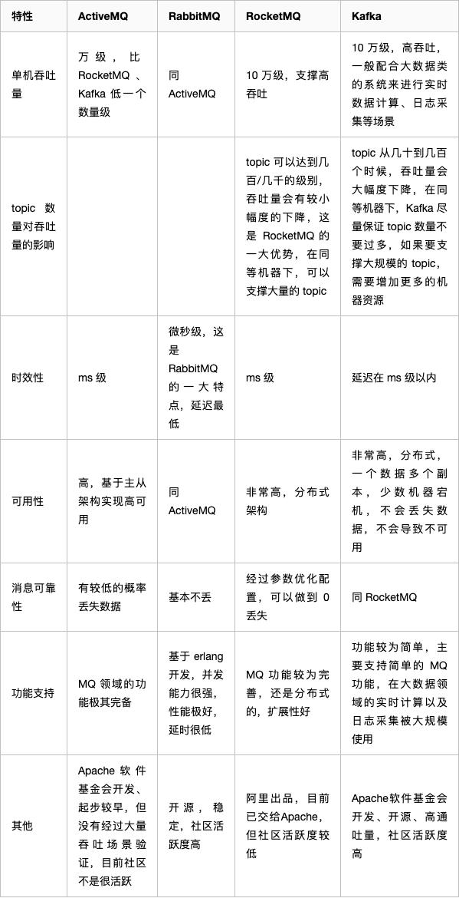
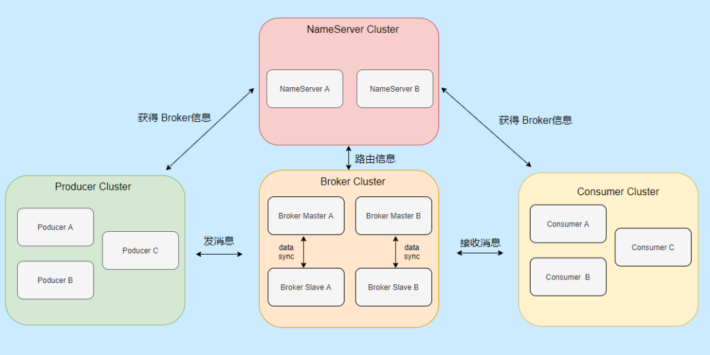

RocketMQ详解与项目使用
消息中间件的用处
- 解耦：传统的软件开发模式，各个模块之间相互调用，数据共享，每个模块都要时刻关注其他模块的是否更改或者是否挂掉等等，使用消息队列，可以避免模块之间直接调用，将所需共享的数据放在消息队列中，对于新增业务模块，只要对该类消息感兴趣，即可订阅该类消息，对原有系统和业务没有任何影响，降低了系统各个模块的耦合度，提高了系统的可扩展性。
- 异步：消息队列提供了异步处理机制，在很多时候应用不想也不需要立即处理消息，允许应用把一些消息放入消息中间件中，并不立即处理它，在之后需要的时候再慢慢处理。
- 削峰：在访问量骤增的场景下，需要保证应用系统的平稳性，但是这样突发流量并不常见，如果以这类峰值的标准而投放资源的话，那无疑是巨大的浪费。使用消息队列能够使关键组件支撑突发访问压力，不会因为突发的超负荷请求而完全崩溃。消息队列的容量可以配置的很大，如果采用磁盘存储消息，则几乎等于“无限”容量，这样一来，高峰期的消息可以被积压起来，在随后的时间内进行平滑的处理完成，而不至于让系统短时间内无法承载而导致崩溃。在电商网站的秒杀抢购这种突发性流量很强的业务场景中，消息队列的强大缓冲能力可以很好的起到削峰作用。
消息中间件选型
Kafka
优点：
- 首先，Kafka的最大优势就在于它的高吞吐量，在普通机器4CPU8G的配置下，一台机器可以抗住十几万的QPS，这一点还是相当优越的。
- 其次，Kafka的性能同样很高，发送消息过去基本都是毫秒级别的。
- Kafka支持集群部署，如果部分机器宕机不可用，则不影响Kafka的正常使用。
缺点：
- Kafka有可能会造成数据丢失，因为它在收到消息的时候，并不是直接写到物理磁盘的，而是先写入到磁盘缓冲区里面的。
- Kafka功能比较的单一主要的就是支持收发消息，高级功能基本没有，就会造成适用场景受限。
业界里一般将kafka用来处理用户的行为日志的采集的传输，用在大数据场景较多，可以接受数据的丢失，而且要求吞吐量要极高。
RabbitMQ
优点：
- RabbitMQ能保证数据不丢失
- 能保证高可用，部分机器宕机了还可以继续使用。
- 支持很多高级功能，如消息重试、死信队列等
缺点：
- 首先是RabbitMQ吞吐量比较低，大概在每秒几万的样子，这样像对于大型电商促销秒杀就不能胜任。
- 集群线性扩展比较麻烦。
- 开发语言是erlang，懂得人不是很多，无法对其改造。
RocketMQ
RocketMQ是阿里巴巴开源的消息中间件，各方面也表现的比较优越，几乎同时解决了Kafka和RabbitMQ它们两个的缺点。
优点：
- 吞吐量很高，大概普通机器有十万QPS往上。
- 保证高可用，高性能。
- 保证数据绝对不丢失
- 支持大规模集群部署，线性扩展方便
- 支持各种高级的功能，如延迟消息、消息回朔等
- java语言开发，满足了国内绝大部分公司技术栈

选型
- 如果我们业务只是收发消息这种单一类型的需求，而且可以允许小部分数据丢失的可能性，但是又要求极高的吞吐量和高性能的话，就直接选Kafka就行了.
- 如果业务比较平稳,业务量比较少，而且没有什么改源码的特殊需求的话，在面对选择MQ的时候就可以选用RabbitMQ。
- 如果业务要求流量很大，且对消息丢失容忍度低，就直接用RocketMQ。
RocketMQ简介
RocketMQ作为一款纯java、分布式、队列模型的开源消息中间件，支持事务消息、顺序消息、批量消息、定时消息、消息回溯等。主要功能是异步解耦和流量削峰：。
RocketMQ架构

Name Server
NameServer是一个很简单的 Topic 路由注册中心，支持 Broker 的动态注册和发现，保存 Topic 和 Borker 之间的关系。通常也是集群部署，但是各 NameServer 之间不会互相通信， 各 NameServer 都有完整的路由信息，即无状态。
Broker
主要负责消息的存储、查询消费，支持主从部署，一个 Master 可以对应多个 Slave，Master 支持读写，Slave 只支持读。Broker 会向集群中的每一台 NameServer 注册自己的路由信息。
Producer
就是消息生产者，可以集群部署。它会先和 NameServer 集群中的随机一台建立长连接，得知当前要发送的 Topic 存在哪台 Broker Master上，具体是Producer 每 30s 会向 NameSrv 拉取路由信息更新本地路由表，有新的 Broker 就和其建立长连接，每隔 30s 发送心跳给 Broker 。然后再与其建立长连接，支持多种负载平衡模式发送消息。
Consumer
消息消费者，也可以集群部署。它也会先和 NameServer 集群中的随机一台建立长连接，得知当前要消息的 Topic 存在哪台 Broker Master、Slave上，然后它们建立长连接，支持集群消费和广播消费消息，支持PUSH和PULL两种消费模式，并且消费者订阅消息是以 ConsumerGroup 为单位存储的，所以ConsumerGroup 中的每个 Consumer 需要有相同的订阅。因为订阅消息是随着心跳上传的，如果一个 ConsumerGroup 中 Consumer 订阅信息不一样，那么就会出现互相覆盖的情况。比如消费者 A 订阅 Topic a，消费者 B 订阅 Topic b，此时消费者 A 去 Broker 拿消息，然后 B 的心跳包发出了，Broker 更新了，然后接到 A 的请求，一脸懵逼，没这订阅关系啊。
PullConsumer
Pull：拉取型消费者（Pull Consumer）主动从消息服务器拉取信息，只要批量拉取到消息，用户应用就会启动消费过程，所以 Pull 称为主动消费型。Pull方式里,取消息的过程需要用户自己写,首先通过打算消费的Topic拿到MessageQueue的集合,遍历MessageQueue集合,然后针对每个MessageQueue批量取消息,一次取完后,记录该队列下一次要取的开始offset,直到取完了,再换另一个MessageQueue。
缺点：
由于主动权在消费方,消费方无法准确地决定何时去拉取最新的消息。如果一次Pull取到消息了还可以继续去Pull,如果没有Pull取到则需要等待一段时间重新Pull，在阿里中的解决是长轮询 Pull,消费者如果尝试拉取失败,不是直接return,而是把连接挂在那里wait,服务端如果有新的消息到来,把连接notify起来,这也是不错的思路。但海量的长连接block对系统的开销还是不容小觑的,还是要合理的评估时间间隔,给wait加一个时间上限比较好。
PushConsumer
推送型消费者（Push Consumer）封装了消息的拉取、消费进度和其他的内部维护工作，将消息到达时执行的回调接口留给用户应用程序来实现。所以 Push 称为被动消费类型，但从实现上看还是从消息服务器中拉取消息，不同于 Pull 的是 Push 首先要注册消费监听器，当监听器处触发后才开始消费消息。
缺点：
慢消费无疑是Push模式最大的致命伤,如果消费者的速度比发送者的速度慢很多,势必造成消息在broker的堆积。假设这些消息都是有用的无法丢弃的,消息就要一直在broker端保存。当然这还不是最致命的,最致命的是broker给consumer推送一堆consumer无法处理的消息,consumer不是reject就是error,然后来回踢皮球。所以push适合于没有慢消费情况的场景下
建议使用主动拉去消息而不是使用事件的监听（事件驱动方式是建立好长连接，由事件（发送数据）的方式来实时推送。如果broker主动推送消息的话有可能push速度快，消费速度慢的情况，那么就会造成消息在consumer端堆积过多，同时又不能被其他consumer消费的情况。而pull的方式可以根据当前自身情况来pull，不会造成过多的压力而造成瓶颈。所以采取了pull的方式。）
四者关系
先启动 NameServer 集群，各 NameServer 之间无任何数据交互，Broker 启动之后会向所有 NameServer 定期（每 30s）发送心跳包，包括：IP、Port、TopicInfo，NameServer 会定期扫描 Broker 存活列表，如果超过 120s 没有心跳则移除此 Broker 相关信息，代表下线。
这样每个 NameServer 就知道集群所有 Broker 的相关信息，此时 Producer 上线从 NameServer 就可以得知它要发送的某 Topic 消息在哪个 Broker 上，和对应的 Broker （Master 角色的）建立长连接，发送消息。
Consumer 上线也可以从 NameServer 得知它所要接收的 Topic 是哪个 Broker ，和对应的 Master、Slave 建立连接，接收消息。
Topic
Topic 是一种消息的逻辑分类，比如说你有订单类的消息，也有库存类的消息，那么就需要进行分类，一个是订单 Topic 存放订单相关的消息，一个是库存 Topic 存储库存相关的消息。
一个发送者可以发送消息给一个或者多个Topic
一个消息接受者可以订阅一个或多个Topic消息；
Tag
标签可以被认为是对 Topic 进一步细化。一般在相同业务模块中通过引入标签来标记不同用途的消息。
Group
Group 分为两个部分 生产者和消费者
- 生产者： 表示发送同一类消息的 Producer，通常情况下发送逻辑是一致的。发送普通消息时，用于标识使用，没有特别的用处。
主要用来作用于事务消息，当事务消息中某条消息一直处于等待状态并超时，Broker会回查同一个Group下的其他producer，确定该消息是 commit 还是 rollback - 消费者： 消费者的分组就非常有意义了，消费者是标识一类 Consumer 的集合名称，这类 Consumer 通常消费一类消息，且消费逻辑一致。同一个 Consumer Group 下的各个实例将共同消费 topic 的消息，起到负载均衡的作用。
消费进度以 Consumer Group 为粒度管理，不同 Consumer Group 之间消费进度彼此不受影响，即消息 A 被 Consumer Group1 消费过，也会再给 Consumer Group2 消费。
Message Queue
消息队列 简称 Queue ，消息物理管理单位。用来并行发送和接收消息，相当于是Topic的分区。
一个Topic会有若干个Queue，消息的生产一般会比消息消费的速度要快，消息进行消费的时会有对应的业务逻辑进行处理，这个时候就会降低消息消费的速度。所有一般Topic会有若干个Queue。主要用来解决生产很快，消费很慢。
如果同一个Topic创建在不同的Broker，那么不同的Broker有不同的Queue，将物理存储在不同的Broker节点之上，具有水平扩展的能力。无论是生产者还是消费者，实际的操作都是针对Queue级别。
Offset
在RocketMQ 中，所有消息队列都是持久化，长度无限的数据结构，所谓长度无限是指队列中的每个存储单元都是定长，访问其中的存储单元使用Offset 来访问，Offset 为 java long 类型，64 位，理论上在 100年内不会溢出，所以认为是长度无限。也可以认为 Message Queue 是一个长度无限的数组，Offset 就是下标。
RocketMQ在项目中的使用：
需求：将用户对帮助帖子的点赞、评论、以及申请进入活动团队、绑定邮件发送等任务使用消息中间件实现。
发送者实例创建
这里将DefaultMQProducer在启动的一开始就作为Bean注入到容器中，其中MqProducerProperties就是从yml配置文件中读取NamesrvAddr和Group。
1 |
|
发送消息实现类
消息发送实现类主要将MqMessageDTO中的信息构建成Message，采用同步的发送监听发送状态的方式
1 |
|
启动推送型消费者
定义一个AbstractConsumerListener接口，在接口中实现了根据MqConsumerProperties配置读取Bean中的namesrvAddr，group开启DefaultMQPushConsumer的消费者，订阅了一个topic下的所有tag，并定义了一个业务处理接口onMessage，具体如下：
1 |
|
默认消费者消费逻辑
继承上述接口并实现ApplicationListener
实现ApplicationContextAware方便根据BeanName获取容器中Bean（MqConsumerBeanEnum）
重写上述接口的onMessage方法实现根据消费到的消息的Topic和Tag拼接成topicTag去MqConsumerBeanEnum中找对应业务的实现Bean。然后调用可以选择执行前置和后置方法或者调用业务处理类的方法进行业务处理。具体代码如下：
1 |
|